消失的國道
和昨天一樣是個艷陽高照的好天氣，風勢明顯小很多，雖然依舊是逆風，但至少還騎的動車。
先在網吧確定網站已經重新恢復上線了，心裡踏實之後，就回旅館收拾行李，準備往塞外前進。
早餐就不在嘉峪關吃了，在熟食肉舖買了五元的滷豬肉，請店員切片，等等邊騎邊吃，就算早午餐一起解決了。
本來打算路上看到什麼餐廳就可以去吃飯，所以一開始不用吃太飽沒關係。
出發時騎在312國道上，心裡想說反正就順著國道騎就好了，一百多公里就可以到今天的目的地，玉門。
結果才剛出嘉峪關，312國道就變的超爛的碎石頭路，而且沒有人在施工，這表示不是因為施工所以路才變爛，而是路本來就是這麼爛。
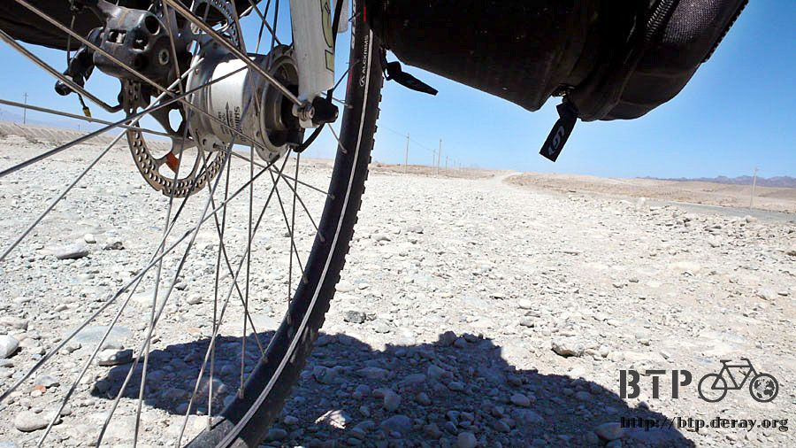
很勉強的慢慢騎，發現對小多太傷了，所以就下車用牽的，但也不知道這爛路要延續多長才會變回柏油路？
牽著牽著，312國道就不見了orz
太誇張了，一條路騎一騎居然就不見了！？
旁邊高處就是高速公路，但是那邊禁行自行車，而且沿路都有鐵絲網圍著，就算想上也上不去。
慢慢牽著車，發現鐵絲網有被破壞的缺口，奮力的將小多牽上斜坡上，開始今天的高速公路之行。
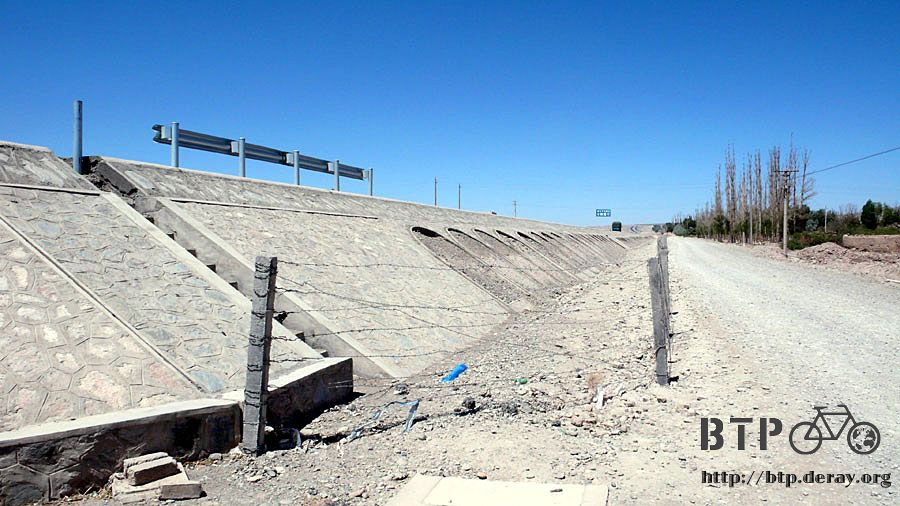
筆直的高速公路，路況超好的！平坦到令人感動，跟下面那個爛石頭路真是天壤之別。
不虧是高速公路，真是相當的有水準，佩服完畢之後就開心的騎車。
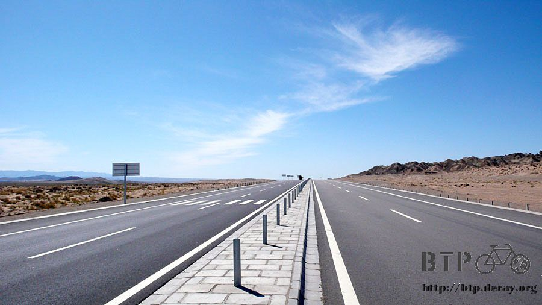
自行車騎高速公路其實問題並不大，只要可以過收費站不被攔下來，就算搞定了！
因為那等你騎在高速公路上面的時候，就算公安開車經過也不會管你。
下收費站也很容易，看是要偷偷的走旁邊，還是光明正大的走出去，
就算被收費員或是交通警察發現，也是被唸兩句說『很危險，不能騎自行車，下次不要再騎了。』就沒事了。
這麼優質的高速公路，不知道為什麼右邊的三條車道連續封閉三十公里，可是卻沒有在施工。
所以右向車道都要去和對向車道擠，加上雙邊都有人在超車，真是超危險的。
所以我就騎在被封閉的右側高速公路，三條寬敞的車道就只有我和小多。
看是要騎S型還是W型都可以，也不會被卡車鳴喇叭，就算一整天都在吹逆風，心裡還是很開心。
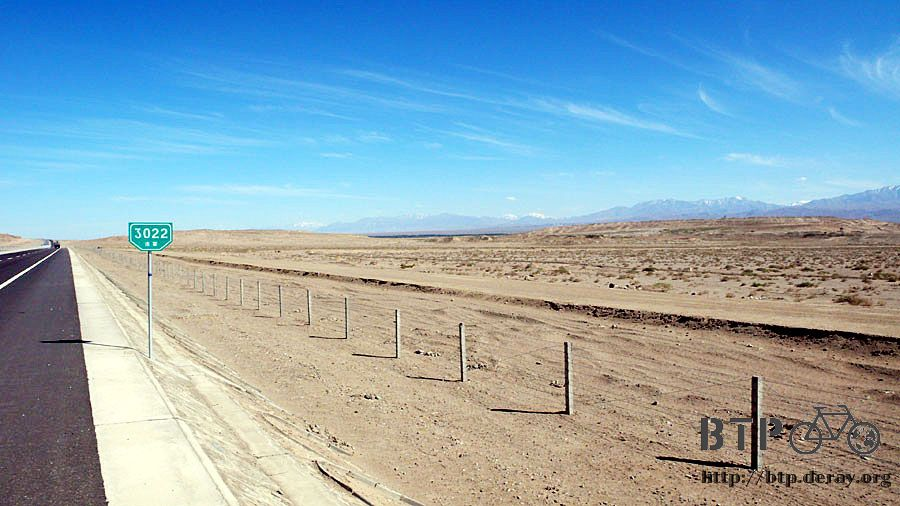
一整天騎車，一直到晚上八點半找到旅館，才有餐廳讓我吃飯~_~
路上騎車肚子餓的時候，我就喝袋子牛奶、吃餅乾、脆麵、甜花生，這些零嘴來填肚子。
雖然吃不飽，但起碼不會餓著肚子騎車，基本熱量也可以提供。
牛奶喝完沒多久就肚子痛>"<，只好在沙漠裡大便。
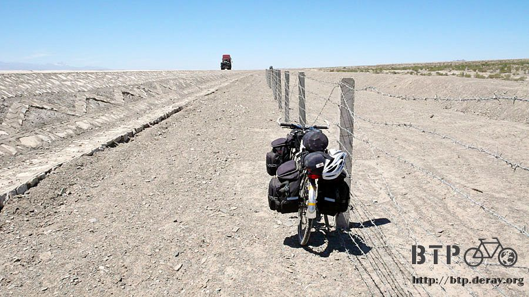
今天還看到龍捲風，從小小的氣旋開始成形，然後捲起風砂，形狀越來愈越明顯，高度也越來越高。
就在我旁邊不到五公尺的地方通過，強風所刮著的風沙打在臉上超痛的說~_~像是被一千根針刺一樣痛。
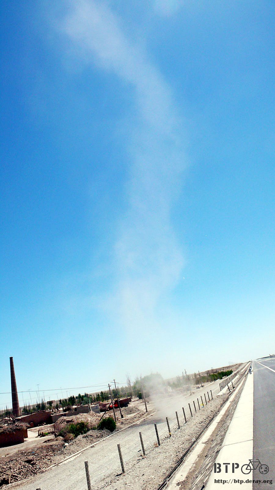
每次我說高速公路上面沒有車，整條路只有我一個人，在路上滾來滾去也沒關係，真是超自在的。
一定會有人覺得我在唬爛，『高速公路怎麼可能會沒有車？哪有可能在高速公路滾來滾去？』
不要緊，有圖有真相，我跟小多雙雙躺在高速公路正中央睡覺 XD
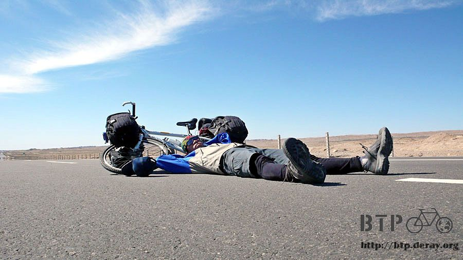
天空只有一絲絲的雲，完全擋不住太陽，勤勞的每兩小時補充一次防曬油。
太陽雖然很大，但是天氣不熱，氣溫都在26度上下，還算蠻舒適的。
延伸到沙漠裡的火車鐵軌，不知道會通到哪裡去呢？

一路上都沒有任何的城鎮和商家，都是一望無際的沙漠，遠方的高山上居然還有白色未融的積雪，一冷一熱形成強烈對比。
鐵軌上不時有些運貨的火車在跑，車廂都拖很長很長，每列火車都是40節以上的車廂。
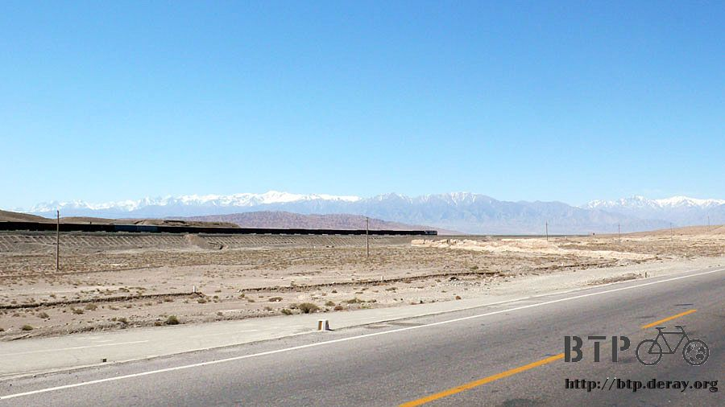
在高速公路上開心的騎著車，心裡想說只要出現出口的話，那我就下去，然後找到312國道再繼續騎。
不要佔高速公路太多便宜，一直騎到下午三點才出現出口，從『清泉』下去。
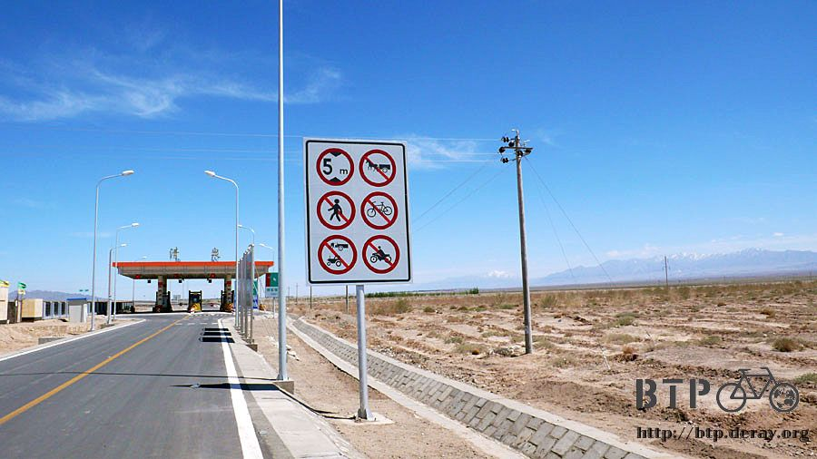
回頭一看果然是禁行自行車，心中大喜，問路找到312國道之後，循規蹈矩的騎我該走的路。
結果又跟早上一樣，好好的路走沒多久，又變成爛石子路，就下車用牽的，牽著牽著路又不見了？
我只好再找一個鐵絲網的缺口，重新爬回剛剛那個我才下來的高速公路~_~
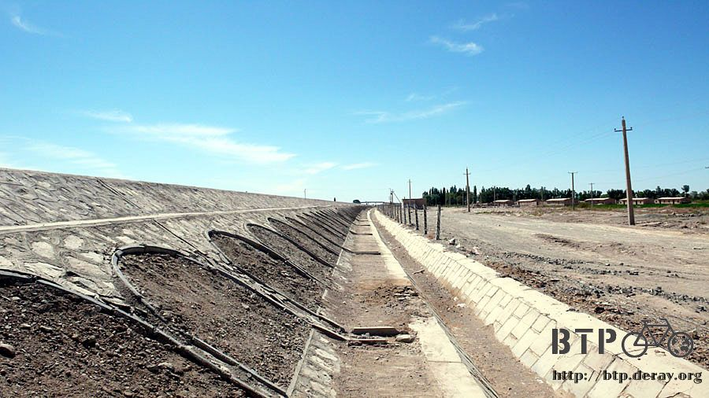
早知道是這樣的話，那我剛剛就不要從出口下去了，看來今天一整天都要在高速公路上面度過了。
這是一條很新的路，很多的護欄都還沒有裝設好，所以我還是可以隨時跑來跑去其他地方。
工商服務時間
在某處的沙漠照幾張相，感謝微星電腦和Jeff提供這一次的筆記型電腦，讓我可以存照片、GPS軌跡和整理遊記、
各位能夠即時看到連載的遊記，都是這台S300電腦的功勞，沒有它的話我只能用筆記本寫日誌，更不可能同步連載了。
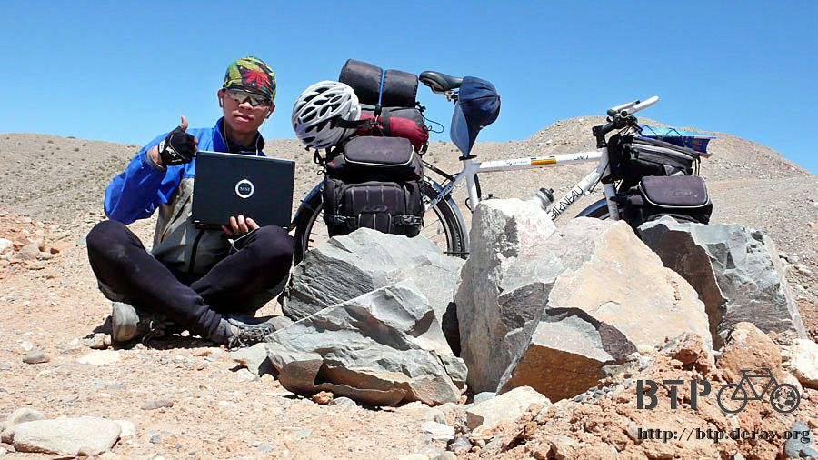
下午五點，因為沒有城鎮，所以我也沒有地方可以休息，就這麼騎了一整天的車。
天氣雖然不熱，可還是有點疲憊，不需要從出口下去就有加油站，於是躲在那邊休息一會，喝瓶果汁，喘口氣。
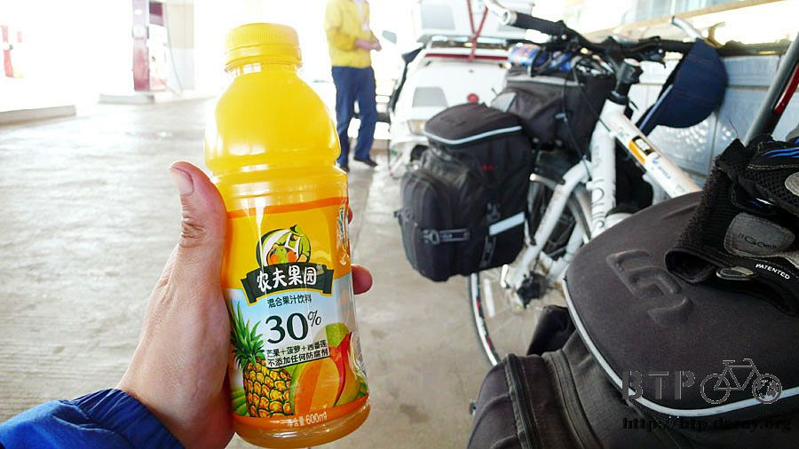
一整天都是逆風，不然就是側風，從來沒有順風過，騎起來有點費力，平路就跟上坡一樣難騎。
因為風很大，所以理所當然的就設立了許多風力發電機，估計有近千支的數量，慢慢的轉動著，很壯觀。
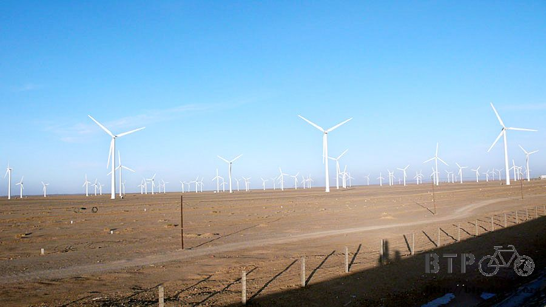
今天從嘉峪關騎到玉門，大概是130公里，因為出發的時間比較晚，所以抵達目的地的時間也就跟著延後。
多虧太陽下山的時間已經是晚上九點之後的事，所以就算晚一點才會到，也不用怕天黑了要摸黑騎車。
大概在晚上八點，從玉門東出口下去，被交通警察唸了兩句，然後騎著又重新出現的312國道，
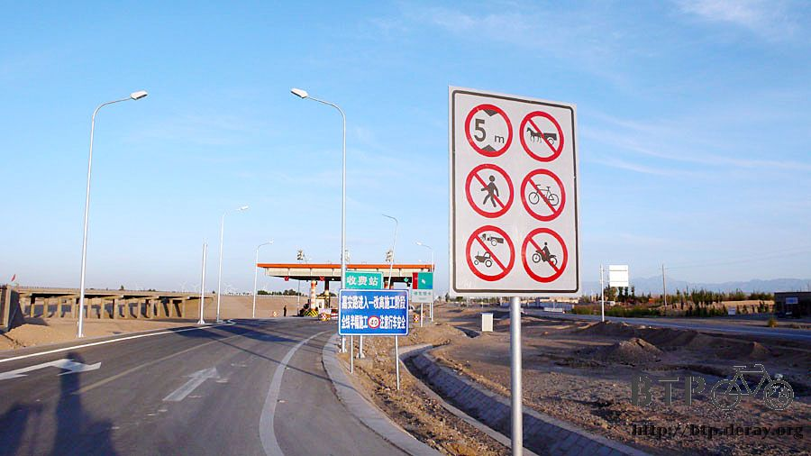
八點半到達玉門市，又累又渴又餓，旅館15元，三人房，還過得去。
先卸下小多的重擔，付過住宿費，馬上就跑去餐廳吃飯，這是今天第一次坐在桌子上好好用餐。
點了蛋炒飯、鄉村鹽煎肉和一碗油菜豆腐湯，吃好一點把三餐都補回來，美味和營養都兼顧。

在洗手台放一些水，然後倒入熱水瓶的熱開水，用毛巾搭配溫水擦澡，一整天的疲憊總算舒坦了些。
衣服就一天不洗沒關係，等明天到安西再洗就好了，再不早一點睡，就會變成晚起、晚出發、晚落腳的惡性循環。
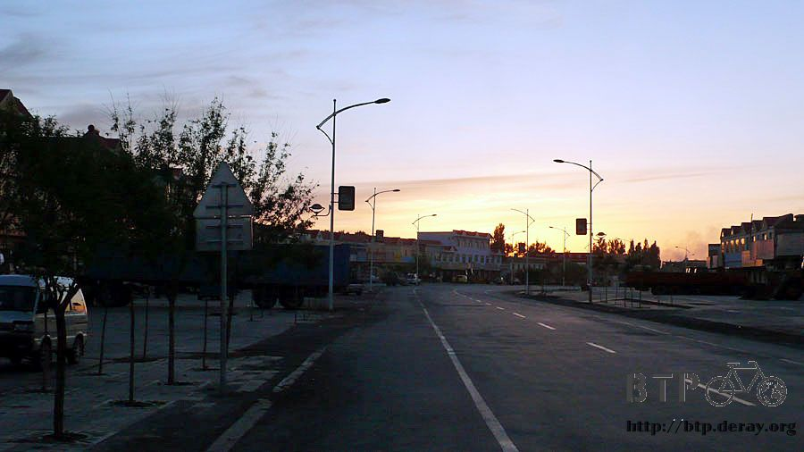
繼續閱讀：5.25 和一千兩百隻羊露營
中國-人民幣－ 1：4.3 台幣
5.24 |
總計：43元 |
滷豬肉5元、果汁4元、晚餐蛋炒飯5元、鄉村鹽煎肉8元、油菜豆腐湯4元、住店15元、網吧一小時2元 |
|